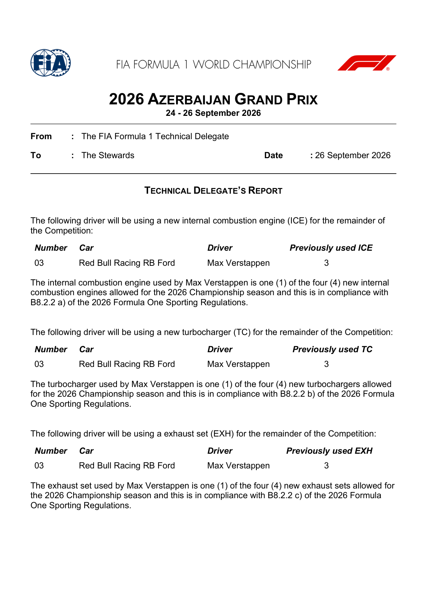
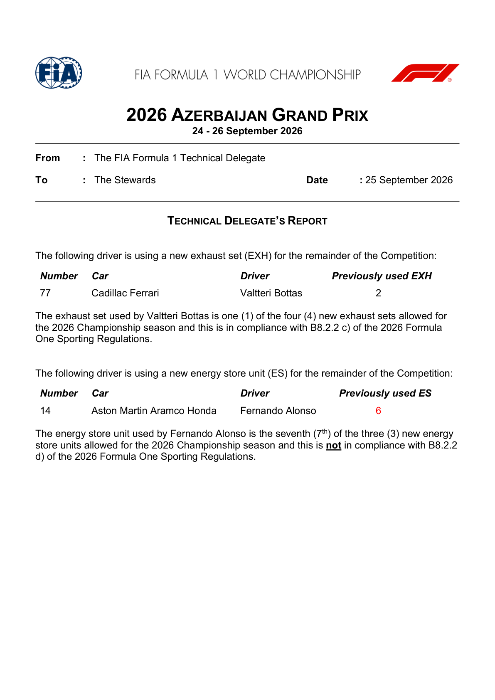
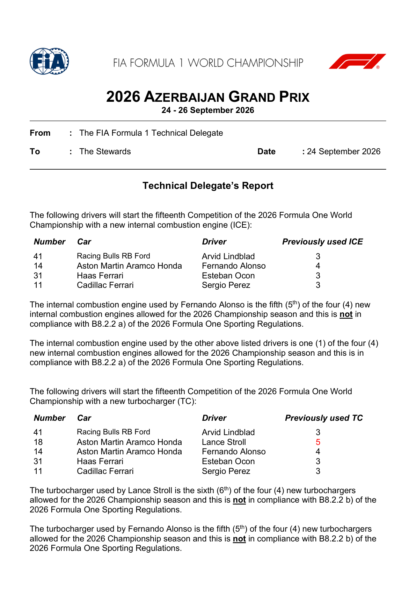
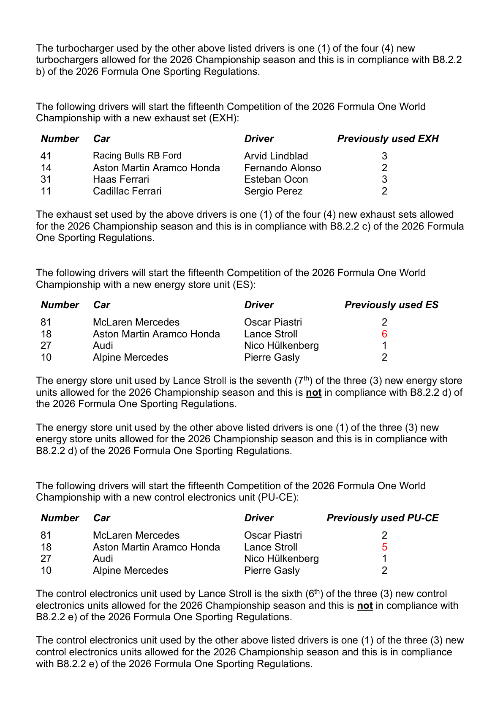
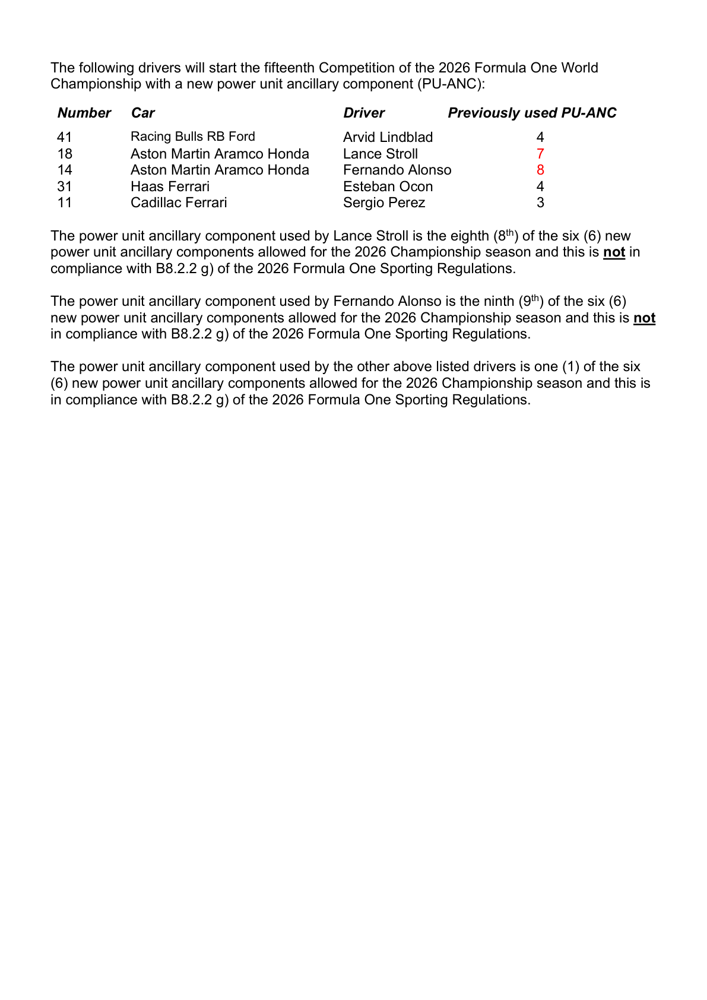
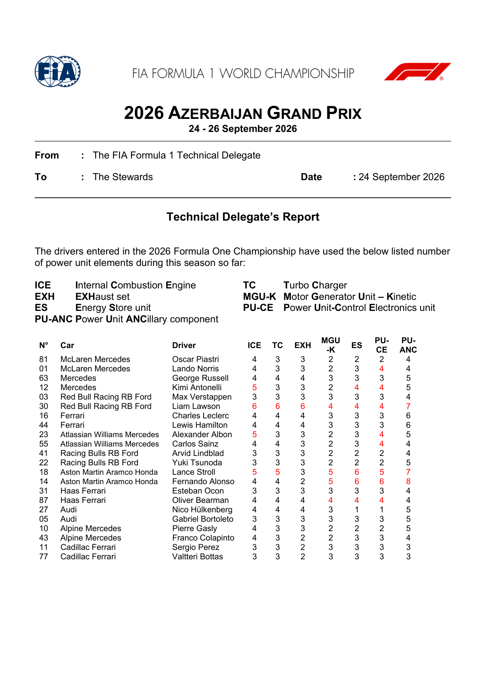
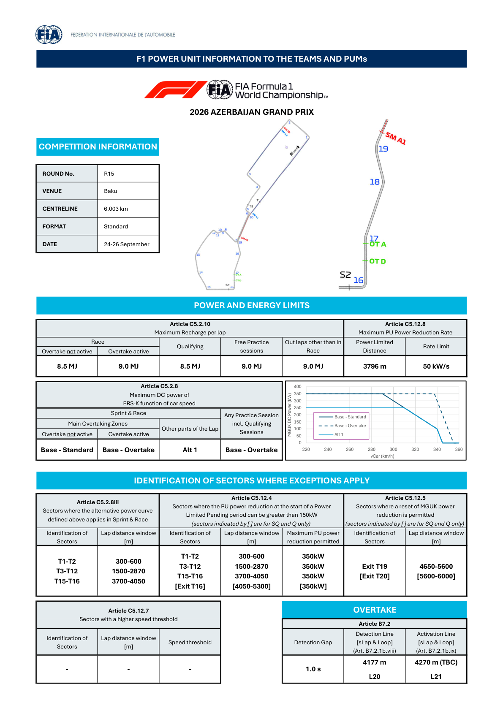

Power Unit & Overtake
Baku recharge limits, power curves, sector exceptions and the separate Overtake aid.
FIA official power-unit documents
Official source; curated transcription may await review. Linked PDFs are the authority. Discovery does not extract or verify numeric values, and does not replace the curated material below.
Last successful FIA document discovery: 2026-09-26T13:11:52.909880+00:00. This is retrieval time, not issue time; newer revisions may exist.
- 2026_azerbaijan_grand_prix_-_new_pu_elements_for_this_competition_1.pdf (official PDF)
- 2026_azerbaijan_grand_prix_-_new_pu_elements_for_this_competition_0.pdf (official PDF)
- 2026_azerbaijan_grand_prix_-_new_pu_elements_for_this_competition.pdf (official PDF)
- 2026_azerbaijan_grand_prix_-_pu_elements_used_per_driver_up_to_now.pdf (official PDF)
- 2026_azerbaijan_grand_prix_-_power_unit_information.pdf (official PDF)
Recharge and power-reduction limits
| Session / condition | Maximum recharge per lap (C5.2.10) |
|---|---|
| Race — Overtake inactive | 8.5 MJ |
| Race — Overtake active | 9.0 MJ |
| Qualifying | 8.5 MJ |
| Free practice | 9.0 MJ |
| Outlaps other than in the race | 9.0 MJ |
Article C5.12.8: 3,796 m power-limited distance; 50 kW/s rate limit. This rate is not an energy allowance.
Which power curve applies?
In the race's main overtaking zones, the sheet assigns Base–Standard with Overtake off and Base–Overtake with it on. The alternative Alt 1 curve applies in the identified other sectors below. All practice sessions including qualifying use Base–Overtake.
The plotted Base–Standard ceiling is 350 kW to 290 km/h, then tapers to 100 kW at 340 km/h and zero at 345 km/h. Base–Overtake holds 350 kW to 340 km/h before falling to zero at 355 km/h. Alt 1 has a 250 kW plateau and joins the standard taper at 310 km/h. These are regulatory ceilings read from the plot, not measured Baku deployment or guarantees of battery availability.
| Rule | Sector | Lap distance | Limit / meaning |
|---|---|---|---|
| C5.2.8iii — Alt 1 | T1–T2 | 300–600 m | Alternative race power curve |
| C5.2.8iii — Alt 1 | T3–T12 | 1,500–2,870 m | Alternative race power curve |
| C5.2.8iii — Alt 1 | T15–T16 | 3,700–4,050 m | Alternative race power curve |
| C5.12.4 — reduction at start of power-limited pending period | T1–T2 / T3–T12 / T15–T16 | 300–600 / 1,500–2,870 / 3,700–4,050 m | 350 kW maximum in each |
| C5.12.4 — qualifying only | [Exit T16] | [4,050–5,300 m] | [350 kW] |
| C5.12.5 — permitted reset | Exit T19 | 4,650–5,600 m | MGUK power reduction reset |
| C5.12.5 — qualifying only | [Exit T20] | [5,600–6,000 m] | MGUK power reduction reset |
| C5.12.7 — higher speed threshold | — | — | No event-specific sector listed |
Square brackets mean SQ/Q-only in the source; Baku has no Sprint Qualifying. Preserve those restrictions rather than applying the long T16-exit exception to the race.
Overtake: detection gap 1.0 s; detection 4,177 m / L20; activation 4,270 m (TBC) / L21. The circuit map places them 90 m after T16 and 20 m before T17 respectively.
Source: FIA Power Unit Information, Articles C5.2.8/C5.2.10/C5.12 and B7.2.
Parts usage confirmed: Alonso and Stroll exceed their season allocation
The Technical Delegate's PU-elements-used report (Document 9, 24 September, 08:30) and the follow-up new-elements report (Document 14, 24 September, 12:34) confirm what The Race's watch anticipated, but with different cars than reported: it is Aston Martin's Alonso and Stroll, not Cadillac, who exceed their allocation for this event.
Alonso (car 14) — three elements over allocation
- New internal combustion engine: his 5th of the 4 allowed for the season.
- New turbocharger: his 5th of the 4 allowed.
- New power unit ancillary component: his 9th of the 6 allowed.
- His new exhaust set (2nd of 4) remains within allocation.
Stroll (car 18) — four elements over allocation
- New turbocharger: his 6th of the 4 allowed for the season.
- New energy store unit: his 7th of the 3 allowed.
- New control electronics unit: his 6th of the 3 allowed.
- New power unit ancillary component: his 8th of the 6 allowed.
Lindblad, Ocon and Perez also took new elements this event but each stays within their season allocation (compliant per Document 14). Formula1.com's own grid-penalty report explained the regulation: the first element exceeded at an event carries a 10-place grid penalty, the second (and each further one) a further 5 places, cumulative at the same event. The Stewards have now issued their own rulings confirming that arithmetic exactly: Document 20 drops Alonso 25 grid positions (10 for the first exceeded element, plus 5 each for the second and third — the Stewards' own reasoning credits three exceeded elements, one more than Formula1.com's article implied) and Document 21 drops Stroll 20 places (5 for each of his four exceeded elements). Both penalties apply "for the next Race in which the driver participates" and are subject to Article B2.5.4b.iv grid allocation if the car is classified in Qualifying — see the automatic tracker below for the Stewards' own documents.
Source: FIA Document 14, New PU Elements for this Competition, PDF pages 2–4.
Source: FIA Document 9, PU Elements Used per Driver up to now.
Source: FIA Document 20, Infringement — Car 14 — PU Elements, 24 September 2026.
Source: FIA Document 21, Infringement — Car 18 — PU Elements, 24 September 2026.
Source: Formula1.com — Alonso and Stroll set for grid penalties, 24 September 2026.
Update, FP3: Alonso takes a fourth exceeded element
The Technical Delegate's Document 33 (25 September, 12:43) reports Alonso's Aston Martin fitted a new energy store unit during FP3 — his 7th of the 3 allowed for the season, one more element over allocation than Document 14 had confirmed. The Stewards' Document 34 imposes a further 5-place grid drop for this fourth exceeded element, on top of the already-confirmed Document 20 penalty. Alonso's cumulative grid penalty for this event is now 30 places (25 + 5), still subject to Article B2.5.4b.iv grid allocation if the car is classified in Qualifying. Bottas's new exhaust set, also logged in Document 33, remains within his season allocation.
Source: FIA Document 33, Technical Delegate's Report, PDF page 2, 25 September 2026.
Source: FIA Document 34, Infringement — Car 14 — PU Element, 25 September 2026.
Race-day update: Verstappen's new PU elements remain compliant
The Technical Delegate's Document 55 (26 September) records new ICE, turbocharger, exhaust and PU ancillary components for Max Verstappen. They bring his ICE, turbocharger and exhaust use to four of four permitted elements each, and his PU ancillary components to five of six. The report marks all four compliant under Article B8.2.2; it does not add a grid penalty.
Source: FIA Document 55, Technical Delegate's Report, PDF pages 2–3.
Official FIA document screenshots
Automatically rendered from the official PDFs. These figures do not update or verify the curated numeric transcriptions above. Unchanged pages already illustrated above are not repeated here.
2026_azerbaijan_grand_prix_-_new_pu_elements_for_this_competition_1.pdf
PDF retrieved 2026-09-26T13:11:56+00:00; this is not its issue date.

2026_azerbaijan_grand_prix_-_new_pu_elements_for_this_competition_0.pdf
PDF retrieved 2026-09-26T13:11:56+00:00; this is not its issue date.

2026_azerbaijan_grand_prix_-_new_pu_elements_for_this_competition.pdf
PDF retrieved 2026-09-26T13:11:56+00:00; this is not its issue date.



2026_azerbaijan_grand_prix_-_pu_elements_used_per_driver_up_to_now.pdf
PDF retrieved 2026-09-26T13:11:56+00:00; this is not its issue date.

2026_azerbaijan_grand_prix_-_power_unit_information.pdf
PDF retrieved 2026-09-26T13:11:56+00:00; this is not its issue date.
